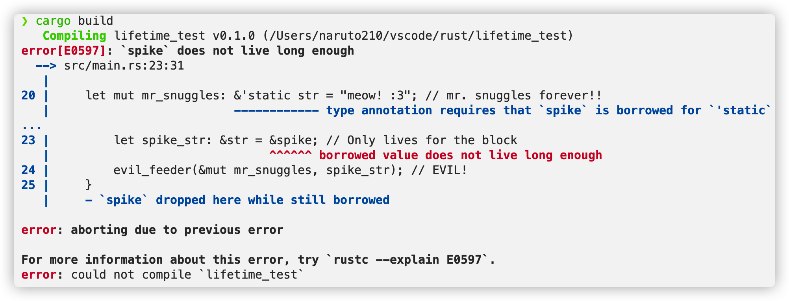
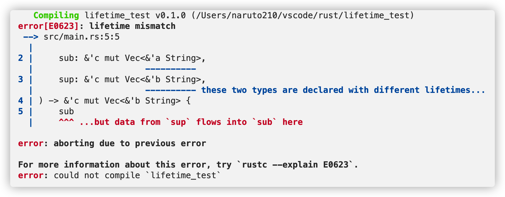
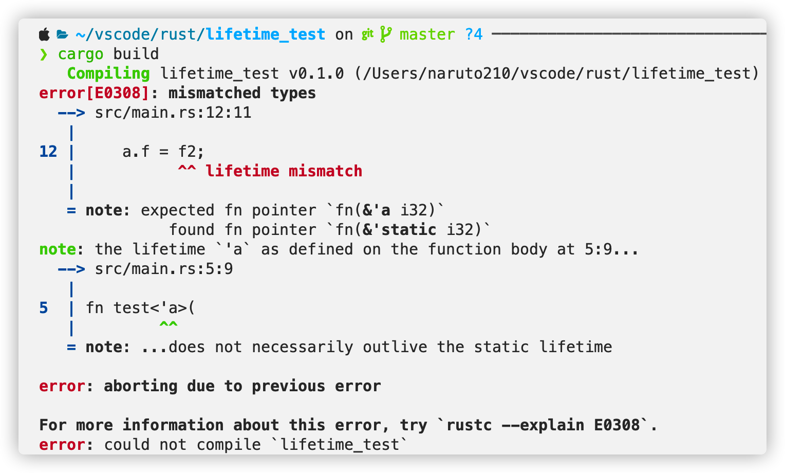

Rust生命周期与变形
最近对 rust 的生命周期有一些疑惑，在找资料学习的过程中自然就了解到由 rust 生命周期导出的 rust subtype、variance 的概念，对这一块儿的学习也解答了我一些对其他语言的问题,同时我也被认识的大佬赶鸭子上架,在 BUPT Rust Meetup 做了分享,keynote 讲稿在此。
子类型与变形
子类型是程序语言类型系统中的一个概念，Wikipedia 对其有如下解释：
If S is a subtype of T, the subtyping relation is often written S <: T, to mean that any term of type S can be safely used in a context where a term of type T is expected.
许多语言的类型系统都支持子类型，最直接、最熟悉的应当就是面向对象中继承关系形成的子类型。例如Cat类继承了Animal类，那么Cat是Animal的子类型（Cat <: Animal），直觉上很容易想到，任何需要Animal的表达式，我们都可以用Cat去替换，这也是里氏替换原则(Liskov substitution principle)：
Let $q(x)$ be a property provable about $x$ of type T. Then $q(y)$ should be true for objects $y$ of type $S$ where $S$ is a subtype of T.
继承关系很直接导出了两个具体类型的之间的子类型关系，可由类型构造器产生的一些更复杂的类型之间的子类型关系如何确定呢？
F(T)为类型构造器，S <: T， 那么F(S)和F(T)的有没有子类型关系呢?如果有，谁是谁的子类型呢？复杂类型之间的子类型关系取决于类型构造器，相对于原始类型，可能是保持、反转或者无关。
- 如果是是保持，即
F(S) <: F(T)，则称之为协变(covariant) - 如果是反转，即
F(T) <: F(S)，则称之为逆变(contravariant) - 如果是无关，则称之为不变/抗变(
invariant)
covariant、contravariant的概念来自于范畴论(Category Theory)中的函子(Functor)。
变形与类型安全
在下面的 Java 代码中，Cat[]赋值给Animal[]类型的变量可以通过编译，但是ArrayList<Cat>赋值给ArrayList<Animal>类型的变量则无法通过编译。说明 Java 在编译时对数组采用了协变，而对泛型容器采用了抗变。但是在运行时，对数组元素进行错误的赋值，会抛出运行时错误，这实际是一种对于编译期数组协变的补救，数组采用协变本身是一种很差劲的设计。
1 | static class Animal { |
由此可见，对于支持子类型的语言，变形的设计是非常重要，其会影响程序的类型安全。
那么，什么时候采用协变，什么时候采用逆变，又在什么时候采用抗变呢？
想一下这样一个程序，一个函数，接受一个笼子参数，笼子里面装着动物，不管传递的笼子参数中装着什么动物，都将笼子中的动物替换成一只狗，这样做的话，当调用完函数后，外部程序继续将笼子中的动物当作原动物来对待，类型安全就完蛋了。
1 | static class Cage<T extends Animal> { |
上面的这段 Java 代码当然是无法编译成功的，因为 Java 不对泛型容器使用协变。但是不能使用协变的依据是什么呢？是读写操作。
如果一个容器只读，那么我们可以使用协变，将一个Cage<Cat>当作Cage<Animal>读取，任何时候都不会出错；如果类型只写，那么函数中的操作只能对容器内容进行写入或者什么都不做，此时我们可以考虑逆变，即Cage<Animal>是Cage<Dog>的子类型，对于任何需要Cage<Dog>的函数，我们都可以传入Cage<Animal>，函数只会向其中写入一只Dog，而不关心原来是什么，并且程序也永远也不会去读Cage里的东西，程序语言中，逆变基本不出现；如果类型可读可写，那么只能是抗变，要求类型严格一致来保证类型安全。
类型构造器导致逆变的情况非常少，主要出现在以函数作为类型构造器时：
$$
F(U) \rightarrow V
$$
如上的一元函数，接受一个U类型的参数，返回一个V类型的值。如果有U <: T，那么任何需要$F(U) \rightarrow V$的地方，可以使用$F(T) \rightarrow V$代替，这很直观，因为U是T的子类型，所以一个能处理 T 类型的函数必然能处理 U 类型，例如一个能计算Animal年龄的函数一定也能计算Cat的年龄，所以有：
$$
U <: T \Rightarrow F(T) \rightarrow V <: F(U) \rightarrow V
$$
即我们可以用一个作用域较大的函数代替一个作用域较小的函数，因为我们可以在使用时安全地收缩它的作用域至和后者一样，即只使用Animal中属于Cat的那一部分。
Rust 生命周期
Rust 没有类型继承，但是 Rust 有 lifetime 啊，所以 Rust 的子类型必定是指 lifetime 之间的关系。
在 Rust 中，'a:'b意思是'a outlives 'b，即'a表示的生命周期大于等于'b，也代表着'a <: 'b。乍一看有点反直觉，但也很好理解。'a:'b代表'a至少和'b一样长，即'a比'b更加特化，就像Cat至少是种Animal，Cat更加特化。'static关键字代表静态生命周期，在程序的整个生命周期中持续存在，所以'static是任意生命周期'a的子类型。
我们经常会感叹于 Rust 编译器的智能，能准确推断出程序中某个引用的生命周期不够长、不匹配。这同时也是子类型和变形的功劳。根据上文讨论的结论，Rust 生命周期的子类型有如下变形规则：
| ‘a | T | U | ||
|---|---|---|---|---|
| * | &'a T |
covariant | covariant | |
| * | &'a mut T |
covariant | invariant | |
| * | Box<T> |
covariant | ||
Vec<T> |
covariant | |||
| * | UnsafeCell<T> |
invariant | ||
Cell<T> |
invariant | |||
| * | fn(T) -> U |
contravariant | covariant | |
*const T |
covariant | |||
*mut T |
invariant |
我们看如下这个例子：
1 | fn evil_feeder<T>(input: &mut T, val: T) { |
编译结果：

我们一眼就能看出，spike_str的 lifetime 太短了，不可能复制给mr_snuggles，那么编译器是如何推断的呢？
- 因为
&mut T是对 T 的 invariant，所以编译器推断 T 必须是&'static str； spike_str是一个&'a str，对'a是 covariant，要匹配 T，必须尝试通过 covariant 变形成'static str；- 那么编译器推断出
&'a str:'&'static str，也即'a:'static，这当然无法成立，导致编译错误。
此外，再看一个更明显的例子:
1 | // compile error |
build 结果如下：

- 在两个函数的泛型参数中，显式标注了
'a : 'b； - 由于
&'a T对'acovariant，所以&'a String : &'b String； - 由于
Vec<T>对Tcovariant，所以Vec<&'a String> : Vec<&'b String>； - 由于
&'a T对 T 是 covariant，所以&'c Vec<&'a String> : &'c Vec<&'b String>； - 所以在 covariant 函数中，当函数要求返回
&'c Vec<&'b String>时，可以直接返回&'c Vec<&'a String>； - 但是
&'c mut T对 T 是 invariant，&'c mut Vec<&'a String>与``&’c mut Vec<&’b String>`间没有子类型关系，所以在 invariant 函数中无法再这么做。
最后还有一个例子，看看函数的逆变：
1 | struct ContraVariant<Mixed> { |
build 结果如下：

可以看到，四个赋值语句中，只有a.f = f2失败了。
fn(T)对Tcontravariant，&'static i32 : &'a i32，所以fn(&'a i32) : fn(&'static i32)；a.f类型为fn(&'a i32)，f2类型为fn(&'static i32)；a.f = f2，相当于把父类型变量赋值给了子类型，类型不匹配，失败了。